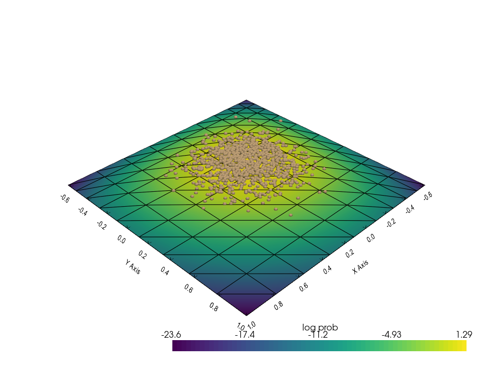

Introduction¶
Change in Density¶
%reload_ext tensorboard
%reload_ext autoreload
import os
import torch
import pyvista as pv
import torch.distributions as tdist
from regilib.core.invertible_modules.bijective.deterministic import AffineTransform
from regilib.core.dynamics.dynamical_state import DynamicalState
from regilib.core.numerics.derivatives import batch_jacobian
from regilib.core.invertible_modules.invertible_module import InvertibleModule
from regilib.core.invertible_modules.charts import SphericalCoordProj
root='../results/introduction/'
def cat_zeros(x): return torch.cat([x.clone(), torch.zeros(x.shape[0], 1)], 1).detach().numpy()
uniform distribution¶
base_dist = tdist.Normal(0, 0.2)
_uniform_grid = torch.stack(torch.meshgrid(
torch.linspace(-1, +1, 10),
torch.linspace(-1, +1, 10)
), -1).view(-1, 2)
base_grid = DynamicalState(
state = _uniform_grid.requires_grad_(True),
log_prob = base_dist.log_prob(_uniform_grid).sum(-1)
)
base_samples = DynamicalState(
state := base_dist.sample([1000, 2]).requires_grad_(True),
log_prob = base_dist.log_prob(state).sum(-1)
)
/home/bawaw/.conda/envs/pdm_tutorial/lib/python3.8/site-packages/torch/functional.py:445: UserWarning: torch.meshgrid: in an upcoming release, it will be required to pass the indexing argument. (Triggered internally at /opt/conda/conda-bld/pytorch_1639180588308/work/aten/src/ATen/native/TensorShape.cpp:2157.)
return _VF.meshgrid(tensors, **kwargs) # type: ignore[attr-defined]
pv.set_plot_theme("document")
pv.set_jupyter_backend('None')
plotter = pv.Plotter()
plotter.add_mesh(
pv.PolyData(cat_zeros(base_grid.state)).delaunay_2d(),
show_edges=True,
render_points_as_spheres=True, scalars = base_grid.log_prob.detach(),
scalar_bar_args={'title': 'log prob'}
)
# plotter.add_mesh(
# pv.PolyData(cat_zeros(base_samples.state)),
# render_points_as_spheres=True, point_size=8)
plotter.show_bounds()
plotter.screenshot(os.path.join(root, 'plane.png'))
plotter.show()
Elu transform¶
class EluTransform(InvertibleModule):
def forward(self, ds, **kwargs):
state_in = ds['state']
state_out = torch.nn.functional.elu(state_in)
ds['state'] = state_out
# p(x) -= |log det Jf(z)|
if hasattr(ds, 'log_prob'):
ds['log_prob'] -= batch_jacobian(state_out, state_in).slogdet()[1]
return ds
t1 = EluTransform()
elu_grid, elu_samples = t1(base_grid.clone()), t1(base_samples.clone())
pv.set_plot_theme("document")
pv.set_jupyter_backend('None')
plotter = pv.Plotter()
plotter.add_mesh(
pv.PolyData(cat_zeros(elu_grid.state)).delaunay_2d(),
show_edges=True,
render_points_as_spheres=True, scalars = elu_grid.log_prob.detach(),
scalar_bar_args={'title': 'log prob'}
)
plotter.add_mesh(
pv.PolyData(cat_zeros(elu_samples.state)),
render_points_as_spheres=True, point_size=8)
plotter.show_bounds()
plotter.screenshot(os.path.join(root, 'elu.png'))
plotter.show()

Stereographic projection¶
class StereoCoordProj(InvertibleModule):
def forward(self, ds, **kwargs):
state_in = ds['state']
psi, gamma = state_in.T
x, y, z = 2*psi/(1+psi**2+gamma**2), 2*gamma/(1+psi**2+gamma**2), (-1+psi**2+gamma**2)/(1+psi**2+gamma**2)
state_out = torch.stack([x, y, z], -1)
# p(x) -= 1/2 log det [J_f^T(u)J_f(u)]
if hasattr(ds, 'log_prob'):
Jf = batch_jacobian(state_out, state_in)
ds['log_prob'] -= 0.5 * torch.bmm(
torch.transpose(Jf, -2, -1), Jf).slogdet()[1]
ds['state'] = state_out
return ds
t2 = StereoCoordProj()
stereo_grid, stereo_samples = t2(base_grid.clone()), t2(base_samples.clone())
pv.set_plot_theme("document")
pv.set_jupyter_backend('None')
plotter = pv.Plotter()
plotter.add_mesh(
pv.PolyData(stereo_grid.state.detach().numpy()).delaunay_2d(),
show_edges=True,
render_points_as_spheres=True,
scalars = stereo_grid.log_prob.detach(),
scalar_bar_args={'title': 'log prob'}
)
plotter.add_mesh(
pv.PolyData(stereo_samples.state.detach().numpy()),
render_points_as_spheres=True, point_size=8)
plotter.camera_position = [
(3.470023427913145, 3.470023427913145, -3.136828710148291),
(0.0, 0.0, -0.33319471776485443),
(0.0, 0.0, -1.0)
]
plotter.show_bounds()
plotter.screenshot(os.path.join(root, 'sphere.png'))
plotter.show()